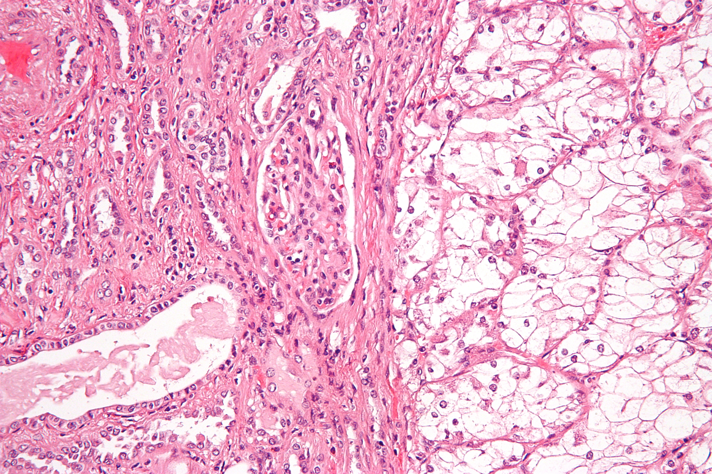

O carcinoma de células renais cai menos que o câncer de bexiga — mas cai. E quando cai, a porta de entrada quase sempre é o fator de risco no enunciado. O principal de todos é o tabagismo.
Quem desenvolve câncer de rim
Tópico 1 — O fator que pesa mais: tabagismo
O carcinoma de células renais aparece numa ou noutra questão de prova — cai menos que o câncer de bexiga, mas cai. E quando cai, a porta de entrada quase sempre é o fator de risco no enunciado: é o que se reconhece de imediato. O principal de todos é o tabagismo. Antes de pensar em qualquer coisa sofisticada, é o cigarro que abre a suspeita.
Tópico 2 — Os companheiros do tabagismo
Em volta do tabagismo orbita um grupo de fatores que o enunciado adora misturar: obesidade, exposição ocupacional e sexo masculino (o homem tem maior probabilidade de desenvolver o tumor). A exposição ocupacional tem dois protagonistas: o cádmio e os derivados do petróleo — entre estes, lembre-se do benzeno. O detalhe que rende prova: os derivados do petróleo já são conhecidos por agredir a medula óssea (plaquetopenia, anemia), e a mesma exposição também empurra o risco de câncer de rim. Tabagismo, obesidade, exposição ocupacional, síndromes genéticas e sexo masculino — qualquer um desses pode estar plantado no enunciado.

Tópico 3 — A pegadinha de São Paulo
A exposição ocupacional tem um endereço preferido nas provas: São Paulo. As bancas paulistas gostam de cobrar o operário exposto a cádmio ou a derivado de petróleo. Vê contato ocupacional num enunciado de massa renal? O examinador está cobrando exatamente isso.
Quiz — fixação
-
Qual é o principal fator de risco para carcinoma de células renais?
Gabarito: B. Tabagismo é o fator número um; os demais somam, mas não lideram.
Por que cair na C: a exposição ao cádmio é fator real, mas coadjuvante — quem marca C confunde "fator cobrado em prova de SP" com "principal fator".
-
Os derivados do petróleo aumentam tanto o risco de câncer de rim quanto o de problemas medulares (anemia, plaquetopenia).
Verdadeiro. O benzeno agride a medula e também eleva o risco renal.
-
As bancas de ______ gostam especialmente de cobrar a exposição ocupacional.
Gabarito: São Paulo. As bancas paulistas escondem o operário exposto a cádmio/benzeno no enunciado.